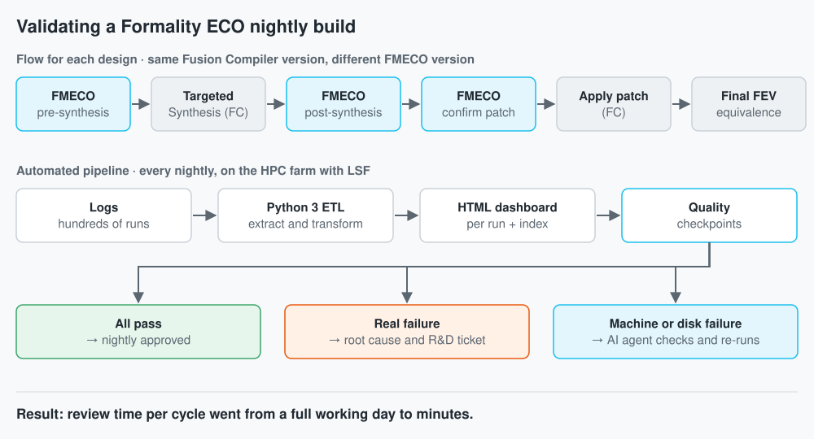

Automated Validation
of Formality ECO
A system that validates every nightly build of a chip verification tool
and cut the review of each cycle from a full working day to minutes.


At a glance
| Challenge | Validate every Formality ECO nightly build without manually reading the logs of hundreds of runs lasting up to 45 hours. |
| Approach | A Python ETL pipeline over the six stages of the flow, compute on the HPC farm, and static HTML dashboards with quality checkpoints; an AI agent re-runs infrastructure failures. |
| My contribution | Design and development of the whole system, root-cause analysis of real failures, and tickets to R&D teams in the US and India. |
| Results | From a day of manual review to minutes per cycle; the team's standard tool for approving nightlies; failures caught before reaching customers. |
| Skills | Formal verification and EDA tools, Python automation and ETL, HPC with LSF, designing under resource constraints, AI agents, root-cause analysis. |
Context and challenge
Formality ECO (FMECO) is the Synopsys tool that computes and verifies late engineering change orders (ECOs) on a chip design that has already been synthesized. I worked on the Formality team, alongside synthesis tools and RTL-to-GDSII flows.
Every FMECO nightly build had to be validated against a set of designs, including test cases from leading semiconductor companies, with flows of up to 45 hours. The review was done by reading logs by hand: hundreds of runs per cycle, and a full working day each time.
I came to this role after five years as technical lead of the Synopsys Product Validation team in Chile, where I defined the validation methodology and mentored six engineers.
Analysis and solution
Each run goes through six stages: FMECO pre-synthesis, targeted synthesis in Fusion Compiler, FMECO post-synthesis, patch confirmation, patch application in Fusion Compiler, and final formal equivalence verification. Every design ran with the same Fusion Compiler version and a different FMECO version, so any change in the results could be attributed to the build under test.
- Python 3 ETL. Scripts that extract the data from each stage's logs, transform it for analysis, and generate one HTML dashboard per run. A separate script builds the index page with links to every report.
- Quality checkpoints. If the build passes all of them, FMECO passes the quality checks and the nightly is approved. Real failures are analyzed and reported to R&D with a ticket.
- AI agent. Infrastructure failures (machine, disk) are caught by an AI agent that checks whether the failure is real and re-runs the flow automatically.
- More coverage. I ported customer test cases into the suite and created new ones with AI agents, verified with VCS, Design Compiler, Fusion Compiler and Formality, so they could serve as stress tests for the feature under test.
Why this architecture: there were no ready-made tools to adapt. The shared server could not host a database, services like Grafana were not available, and a Jenkins server could not survive the resource limits. So I built the pipeline on the HPC farm with LSF: heavy processing runs on machines requested on demand, and the output is static HTML pages that need no server.
My contribution
I designed and built the team's entire reporting system: extraction, transformation, dashboards, index page, and automation with the nightlies. Every week I checked that the checkpoints passed, investigated the root cause of each real failure, and filed tickets to R&D with the diagnosis, working in English with teams in the US and India.
Results
- Review time per cycle went from a full working day to minutes.
- The dashboard became the team's standard tool for approving FMECO nightly builds.
- Infrastructure failures re-run on their own; only real failures reach R&D.
- Failures were caught in regression, before reaching customers, and I also resolved 20 to 50 complex customer cases per year.
Lessons learned
- Constraints shape the architecture: with no database or services, using the HPC farm for compute and static HTML for results produced a stable system.
- What I would do differently: simplify the scripts, write the log extraction in Go to make it faster, and use asynchronous visualization tools that can handle thousands of regressions.